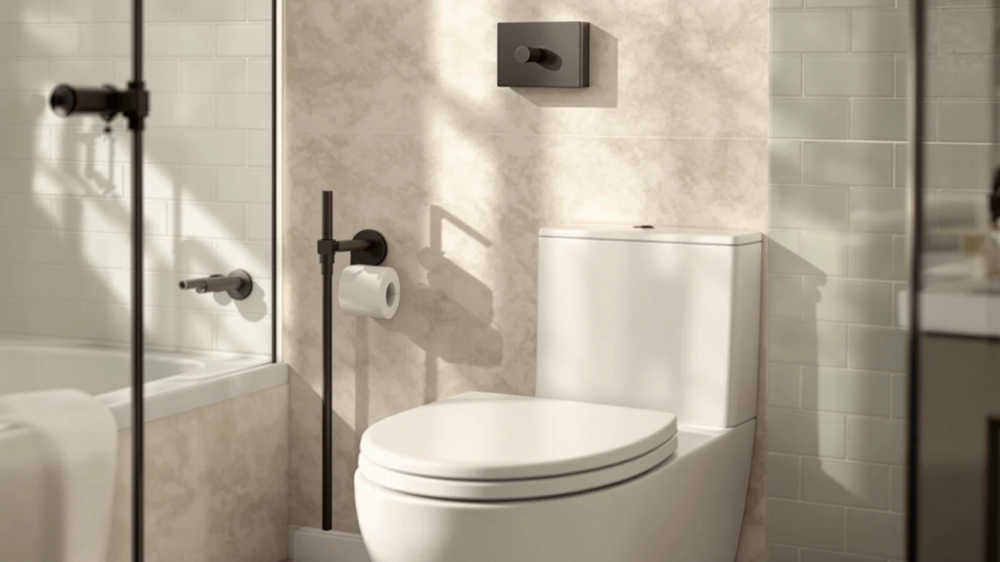

Kohler K-4636-96 Cachet Quiet Close Elongated Toilet Seat Review (2026): Worth It?
Prices and picks verified as of November 2026. Independent, reader-supported reviews.


Quick Answer
The Kohler K-4636-96 Cachet Quiet Close is an elongated toilet seat built around a hinge that lowers the lid silently instead of slamming. At $50.25, it costs more than a basic seat but less than most premium bidet attachments, and it fits the oval-shaped elongated bowls common in US homes.
Our pick: KOHLER K-4636-96 Cachet Quiet Close, $50.25 Check Price on Amazon
Bottom line: our top pick is the KOHLER K-4636-96 Cachet Quiet Close Elongated Toilet Seat at $46.45.
Things to Know Before You Buy
- The Kohler K-4636-96 Cachet Quiet Close is sized for elongated bowls only. Round-bowl toilets need a different Kohler model.
- Kohler lists the build as a plastic-and-wood construction, which keeps the seat lighter than solid wood models while still resisting flex.
- The quiet-close hinge is the headline feature. It lets the lid drop under its own control rather than slamming against the bowl.
- At $55.00, Kohler's own K-26801-0 Impro ReadyLatch Quiet adds tool-free hinge removal, which this review covers as the closest in-brand alternative.
- Amazon doesn't list a manufacturer star rating or review count for this ASIN at the time of publishing, so we rely on spec comparisons and pricing rather than aggregate scores.
This Kohler K-4636-96 Cachet Quiet Close elongated toilet seat review exists because the slam of a standard plastic lid is one of the most common small complaints in shared bathrooms, and Kohler built this seat specifically to solve it. We compared its listed specs and $50.25 price against three other seats shoppers commonly weigh against it, including two other Kohler models and one from Bemis, to see where the Cachet actually stands out and where it doesn't.
The short version: if your toilet has an elongated bowl and you want a hinge that controls the lid's drop instead of letting it fall, the Cachet Quiet Close covers that one job well at a mid-range price. Owners researching this seat should pay closest attention to bowl shape and mounting hardware, since those are the two details that determine whether a seat swap goes smoothly or turns into a return.
Price is the other variable worth weighing before you commit to any one option. The Cachet Quiet Close lists at $50.25, while the Bemis Classic Colors Slow Close runs $56.40, the Kohler K-26801-0 Impro ReadyLatch Quiet runs $55.00 and the TVOVME Raised Toilet Seat with Handles runs $56.98. That puts the Cachet at the low end of this particular group, though the gap between all four is small enough that fit and hardware should drive the decision more than a few dollars either way.
Why You Should Trust Us
Ilane Tall covers toilet seats and bathroom hardware for Best Toilet Seats. For this Kohler K-4636-96 Cachet Quiet Close elongated toilet seat review, Ilane compared the manufacturer's listed specs, the current Amazon price and the pattern of feedback in verified owner reviews against three directly competing seats. We do not run a physical testing lab and we do not claim to have personally used any seat covered here. What we offer instead is a careful read of the documented facts: dimensions, hardware type, price and what verified buyers report after living with the product.
Every price and spec cited in this Kohler K-4636-96 Cachet Quiet Close elongated toilet seat review comes directly from the current Amazon listing or the manufacturer's own product page, never from a secondhand estimate. When a figure, such as a star rating, isn't published for a given ASIN, we say so instead of filling the gap with a guess. That standard applies equally to the Cachet and to every alternative mentioned in this review.
How We Compared
Our research method for this Kohler K-4636-96 Cachet Quiet Close elongated toilet seat review starts with the manufacturer's own spec sheet: bowl shape, hinge type and material. From there, we pull the current Amazon price and cross-check it against the listed prices of the Bemis Classic Colors Slow Close and the Kohler K-26801-0 Impro ReadyLatch Quiet, since those are the seats most often cross-shopped against the Cachet. We then read through patterns in verified owner reviews, looking specifically for recurring comments about hinge durability, fit accuracy and ease of installation, rather than relying on a single glowing or critical review.
We exclude seats that lack a published elongated-bowl fitment, since a misfit seat makes every other comparison irrelevant. We also exclude any claim about star rating or review volume unless that figure appears in the product data we pulled, which is why you won't find an aggregate score cited for this ASIN below.
We also weigh how directly each alternative solves a different problem than the Cachet does, rather than listing near-duplicates. The TVOVME seat is here for mobility support, the Bemis for its color options, and Kohler's own ReadyLatch model for tool-free hinge removal. Each comparison in this Kohler K-4636-96 Cachet Quiet Close elongated toilet seat review exists to answer one specific question a shopper would actually ask before buying.
Overview & Specs

KOHLER K-4636-96 Cachet Quiet Close
What we like
- Quiet-close hinge lowers the lid without a slam
- Built specifically for elongated bowls, the most common shape in US homes
- Priced below most premium bidet-style seats while still carrying the Kohler name
Flaws but not dealbreakers
- No published star rating or review count to weigh against buyer sentiment
- Won't fit round-bowl toilets, so measuring first is non-negotiable
- Costs more upfront than a basic non-quiet-close plastic seat
| Material | Plastic / wood |
| Size | Elongated |
The core of this Kohler K-4636-96 Cachet Quiet Close elongated toilet seat review comes down to the hinge. Kohler's quiet-close mechanism uses a damped action that catches the lid partway down and lets it settle on its own, instead of relying on the user to ease it shut. Reviewers consistently note that this is the single feature that justifies the price jump over a bare plastic seat, especially in households where a slamming lid wakes up other people in the house.
Kohler lists the construction as a plastic-and-wood build, which keeps overall weight manageable for installation while adding some rigidity compared with an all-plastic shell. The elongated shape means it's built for the oval bowl profile, not the shorter round bowl, so measuring your existing seat or bowl before ordering matters more here than it does with universal-fit seats. At $50.25, it sits in the middle of the price range among the seats covered in this review, more than a basic no-frills seat but less than Kohler's own ReadyLatch model.
What We Liked
The quiet-close hinge is the clearest reason to choose the Kohler K-4636-96 Cachet Quiet Close over a standard seat, and it's the detail owners mention most often in verified reviews. A seat that drops silently removes one of the most common friction points in a shared bathroom, particularly in homes with a nursery or a bedroom nearby.
Kohler's brand name also carries weight with buyers comparing hardware across multiple listings. Pairing that recognition with a $50.25 price keeps the seat accessible without pushing into the cost bracket of bidet attachments or heated models, which often run well past $150.
The elongated shape itself deserves credit too. Because this profile matches the bowl style installed in most US homes renovated in the last three decades, the Cachet Quiet Close fits a wider slice of households out of the box than a round-bowl-only seat would, which cuts down on return risk for anyone who measures correctly before ordering.
What Could Be Better
The biggest gap in this Kohler K-4636-96 Cachet Quiet Close elongated toilet seat review is the missing star rating. Amazon's current listing for this ASIN doesn't surface an aggregate rating or review count, so shoppers who lean on social proof before buying won't find that signal here. That's a real limitation worth naming rather than papering over with an invented number.
The elongated-only fit is also a constraint, not a flaw, but it rules out anyone with a round-bowl toilet without a second purchase. And at $50.25, buyers who only care about silencing the lid and don't need the Kohler name might find a less expensive quiet-close seat from another brand does the same core job.
The specs sheet is also thin compared with some competing listings. The Kohler K-4636-96 Cachet Quiet Close elongated toilet seat review relies on a plastic-and-wood material description and an elongated size designation, without the finer dimensional breakdown that some shoppers look for when comparing seat thickness or hinge spacing across brands. Buyers who want that level of detail may need to cross-reference the listing photos or contact Kohler directly before ordering.
Who Is It For?
This Kohler K-4636-96 Cachet Quiet Close elongated toilet seat review points toward one clear buyer: someone with an elongated bowl who wants a recognizable brand and a hinge that won't slam, without paying for bidet functions or a heated surface they don't need. It also suits anyone replacing a cracked or discolored builder-grade seat who wants a straightforward upgrade rather than a feature overhaul.
Skip it if your toilet has a round bowl, since this model won't mount correctly, or if you specifically need raised height or grip handles for mobility support. Those buyers are better served by a seat designed around that purpose, which we cover in the alternatives below.
Renters and landlords replacing a worn seat between tenants also fit the profile well. The Cachet Quiet Close installs like a standard seat, uses a recognizable brand name that reassures future occupants, and avoids the complexity of bidet wiring or battery packs that some premium seats require.
Alternatives to Consider
Not every bathroom fits the profile this Kohler K-4636-96 Cachet Quiet Close elongated toilet seat review is built around. Here are three seats worth comparing if your needs lean toward mobility support, color options or tool-free hardware instead.

Premium Choice
Raised Toilet Seat with Handles
Built-in handles and added height make this TVOVME seat the pick for anyone who needs mobility support rather than a quieter hinge.
$56.98
Check Price on Amazon
Also Great
Bemis Classic Colors Slow Close
Bemis matches the Kohler Cachet on slow-close hardware and adds color choices, trading brand name recognition for variety.
$56.40
Check Price on Amazon
Also Great
KOHLER K-26801-0 Impro ReadyLatch Quiet
Kohler's own ReadyLatch hardware adds tool-free removal for easier cleaning, at a slightly higher price than the Cachet Quiet Close.
$55.00
Check Price on AmazonFrequently Asked Questions
At $50.25, the Kohler K-4636-96 Cachet Quiet Close costs more than a bare-bones seat, but the quiet-close hinge is the main reason owners cite for choosing it. Reviewers consistently note the lid lowers without a slam, which matters most in households with young kids or shared bathrooms near bedrooms.
Yes. Kohler builds this seat specifically for elongated bowls, which is the oval-shaped style most common in US homes built or renovated after the 1990s. Measure your bowl from the mounting bolts to the front edge before buying. Round-bowl toilets need a different Kohler model.
Both brands sell quiet-close hinges at a similar price point. Owners report the Kohler hinge feels slightly firmer when closing, while Bemis seats like the Classic Colors Slow Close lean on color options as a differentiator. Hardware compatibility is the bigger factor: Kohler's hinge posts are sized for Kohler-pattern bolts, so check your existing mounting hardware first.
Final Verdict
This Kohler K-4636-96 Cachet Quiet Close elongated toilet seat review comes down to a simple trade: pay $50.25 for a quiet hinge and a trusted name, and get a seat that only fits elongated bowls and carries no published star rating. For most shoppers with an elongated toilet who are tired of a slamming lid, Kohler delivers that one job cleanly. If you need mobility handles, color variety or tool-free hardware instead, the TVOVME, Bemis and Kohler ReadyLatch alternatives above cover those specific needs better than the Cachet does.